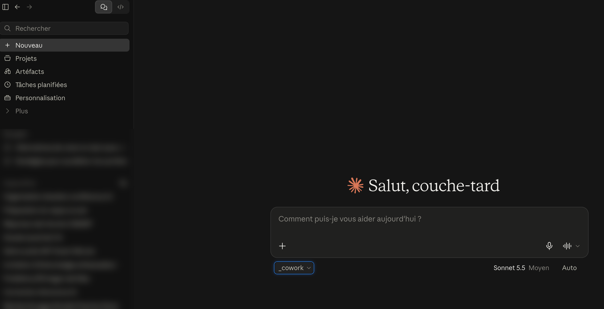
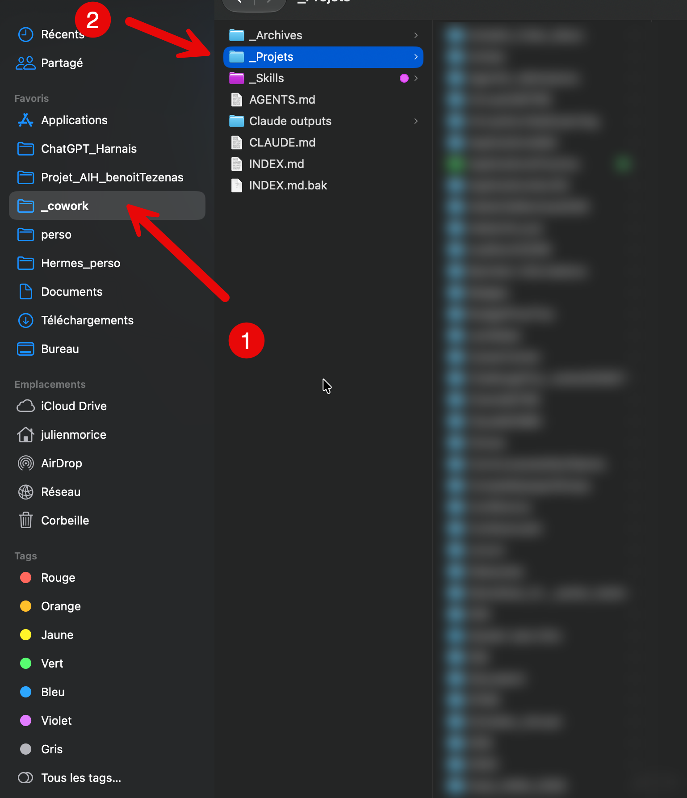
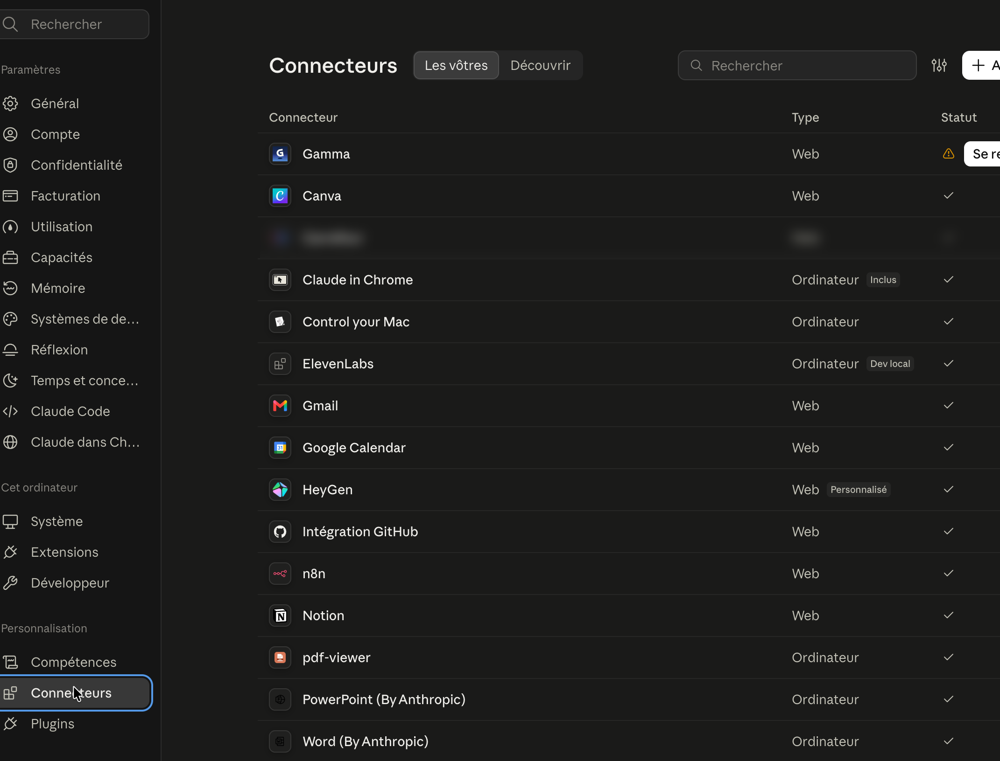
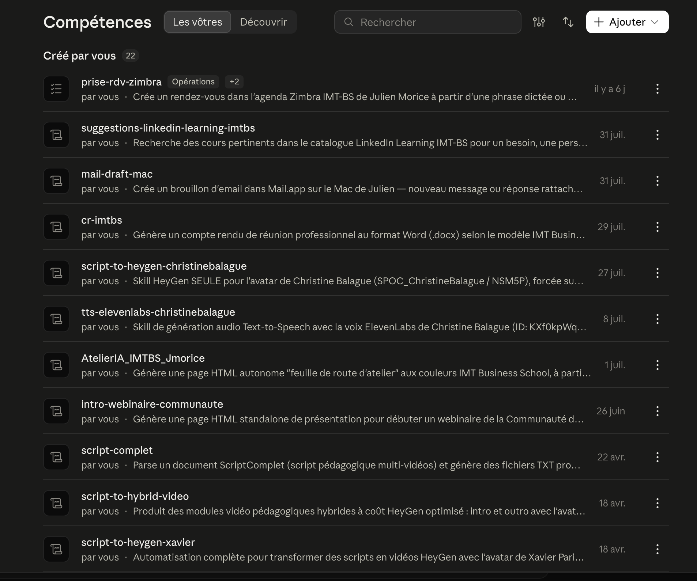
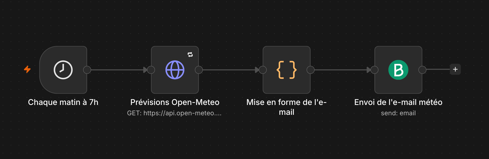
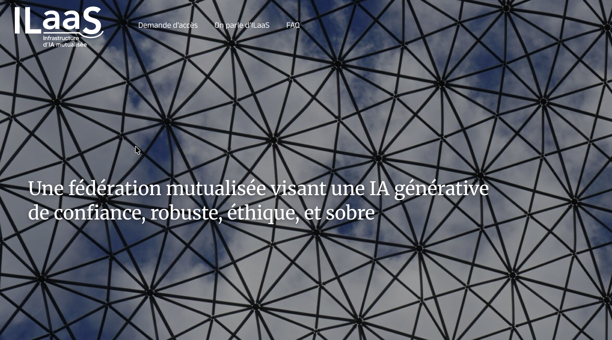
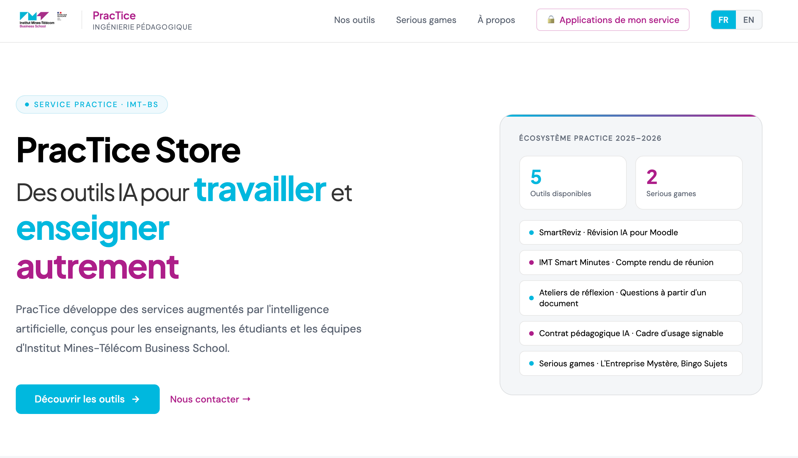
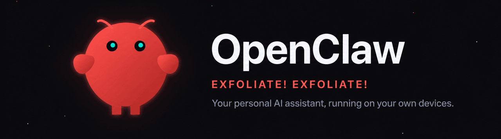
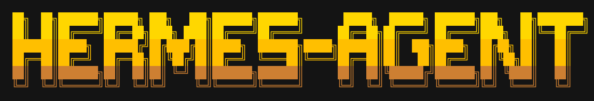

Les Jeudis de l'IA Gen #4.1 · 8 octobre 2026
Panorama et
actualités de l'IA
Vers l'IA agentique
Julien Morice · Service PracTice
Institut Mines-Télécom Business School
Le parti pris de cette séance
Le prompt engineering est mort…
vive le context engineering.
Le prompt n'a pas disparu : il est devenu une pièce du contexte.
Exemple
L'usage du harnais Claude Desktop
Comment je travaille, concrètement.
Étape 1 · Ouvrir Claude Desktop
Je donne à Claude un dossier de travail

1
Une demande
Écrite ou dictée, comme dans un chat.
2
Le dossier _cowork
Sous la zone de saisie : Claude lit et écrit dans ce dossier.
3
Le modèle
Choisi selon la tâche, ici Sonnet 5.5.
Étape 2 · Un dossier bien rangé
Le dossier _cowork, la mémoire de mon travail
1
_cowork : le dossier ouvert à Claude
Dans les favoris du Finder, sélectionné dans Claude Desktop.
2
_Projets : un dossier par projet
À plat, avec des noms clairs : Claude sait où ranger chaque livrable.
i
CLAUDE.md, AGENTS.md, INDEX.md
Qui je suis, mes conventions, la carte des dossiers : lus à chaque session.
+
_Skills et _Archives
Les compétences sauvegardées, les projets terminés.
Bien ranger son dossier, c'est déjà construire du contexte.

Cas pratique
Créez vos comptes rendus de réunion avec le harnais Claude Cowork
De l'audio au compte rendu, en une phrase.
Cas pratique · La démarche
Deux outils, une phrase
1 · Mistral Studio
Transcrire l'audio de la réunion (compte gratuit)
›
2 · Fichier SRT
L'exporter et le déposer dans le dossier « Réunion » de _cowork
›
3 · Claude Cowork
Demander le compte rendu, en une phrase
Par exemple : « Fais-moi le compte rendu de la réunion qui est dans le dossier Réunion. »
Pas de prompt engineering complexe : le dossier, les instructions et la skill de compte rendu font le reste.
Cas pratique · Vidéo · 6 min
Le compte rendu à la main, avec un harnais
Transcription dans Mistral Studio (compte gratuit), export SRT, fichier déposé dans le dossier « Réunion ». Puis une demande orale toute simple à Claude Cowork.
Manuel, pas souverain… mais le résultat est excellent.
Ouvrir la vidéo dans un onglet ↗
▶
Lecteur en cours de chargement
Si rien n'apparaît, ouvrir le permalien dans un onglet séparé.
Pourquoi ça marche avec si peu de mots ?
Parce que le contexte était déjà là.
Et maintenant
Vers l'IA agentique
Du prompt au contexte, du contexte à l'agent.
Vidéo · 5 min
Usage du harnais Claude Cowork en mode agentique
Du script à la vidéo pédagogique : Claude Cowork enchaîne les étapes et pilote les outils connectés par MCP, ElevenLabs pour la voix off, HeyGen pour les vidéos avatar. Le montage final reste à la main.
Les MCP donnent des mains au harnais : il agit directement dans vos outils.
Ouvrir la vidéo dans un onglet ↗
Exemple de vidéo montée ↗
▶
Lecteur en cours de chargement
Si rien n'apparaît, ouvrir le permalien dans un onglet séparé.
Ce qui rend le harnais agentique
Des ustensiles et des recettes
Les connecteurs= les ustensiles
Ce avec quoi Claude agit : HeyGen, ElevenLabs, n8n, Gmail, Notion… branchés par MCP.

Les compétences= les recettes
Comment Claude doit faire : une procédure écrite une fois, réutilisée à chaque demande.

Sans ustensiles, la recette reste sur le papier. Sans recette, on improvise à chaque fois.
Après le harnais, l'orchestrateur
Usage d'un orchestrateur agentique : n8n
Le harnais · Cowork, Claude Code, OpenClaw
L'agent choisit son chemin en route : souple et puissant, mais on ne sait pas d'avance quelles étapes il suivra.
Nuance : pas totalement opaque, on voit les fichiers lus et les outils appelés.
L'orchestrateur · n8n
L'outil fixe le chemin, nœud par nœud, qu'on le construise à la main ou avec Claude Code ; un agent IA tient une ou plusieurs étapes.
Nuance : pas totalement transparent, dans le nœud Agent IA le modèle raisonne comme ailleurs. Mais dans une case, avec une entrée et une sortie visibles.

Un workflow n8n créé par Claude Code : chaque étape est visible, dans l'ordre.
Dans le harnais, l'agent choisit son chemin. Dans n8n, on voit chaque étape : c'est l'explicabilité.
Pourquoi un orchestrateur agentique ?
Six avantages
Avantage 1
Automatiser
Les tâches répétitives tournent seules, déclenchées par un formulaire, un mail ou une heure.
Avantage 2
Fiabiliser
Robustesse et répétabilité : même entrée, même chemin, à chaque fois. Les erreurs se gèrent et les étapes se relancent.
Avantage 3
Expliquer
Chaque étape s'affiche, avec ce qui entre et ce qui sort. On peut montrer le processus à un·e collègue.
Avantage 4
Contrôler
Chaque exécution est gardée et peut être rejouée : on repère l'étape qui a échoué.
Avantage 5
Confiner l'IA
La part d'imprévisible tient dans une case, et une validation humaine peut s'insérer à tout moment.
Avantage 6
Choisir son modèle
n8n est agnostique : Mistral, ILaaS, Claude, GPT ou un modèle local. Cowork ne fonctionne qu'avec Claude, ChatGPT qu'avec OpenAI.
On peut changer de modèle sans changer de processus : un atout pour la souveraineté.
Exemple · L'orchestrateur agentique n8n
Des comptes rendus de réunion depuis un audio
1
Déposer l'audio dans un formulaire
›
2
Transcription par Mistral
›
3 · Agent IA
Génération du compte rendu par ILaaS
›
4
Envoi du mail par le connecteur Brevo
Le chemin est fixé dans l'outil. Une étape est confiée à un agent : c'est ce qui rend le workflow agentique.
Vidéo · 6 min
Le workflow n8n, puis Claude Code qui en crée un
Une simulation : les nœuds s'activent un à un. Puis, depuis Claude Code, via MCP : « envoie-moi la météo tous les matins à 7 h ».
Un agent qui fabrique de l'automatisation à partir d'une phrase.
Ouvrir la vidéo dans un onglet ↗
▶
Lecteur en cours de chargement
Si rien n'apparaît, ouvrir le permalien dans un onglet séparé.
Souverain
Souveraineté
Comment créer des automatisations agentiques souveraines ?
1
Faire tourner le modèle chez ILaaS
Une fédération mutualisée d'une vingtaine d'établissements de l'enseignement supérieur, que l'IMT a rejointe en novembre 2025.
2
Garder toute la chaîne en Europe
Transcription chez Mistral, rédaction du compte rendu chez ILaaS.
3
Garder la clé côté serveur
La clé ILaaS n'est jamais exposée aux utilisateur·rices.
4
Choisir un orchestrateur agnostique
C'est parce que n8n est agnostique qu'on peut brancher ILaaS.

ILaaS, « une fédération mutualisée visant une IA générative de confiance, robuste, éthique et sobre ».
ilaas.fr ↗
Ce qu'on vient de voir
« Envoie-moi la météo
tous les matins à 7 h. »
Une phrase suffit, parce que Claude Code a accès à n8n.
Et vous, qu'allez-vous créer avec n8n ?
Le projet
PracTice Store
Des outils IA pour travailler et enseigner autrement.
Le PracTice Store en un coup d'œil
Des outils verticaux, publics et privés, au service des enseignant·es et des agent·es

- SmartReviz : réviser avec l'IA dans Moodle
- IMT Smart Minutes : le compte rendu de réunion, notre fil rouge
- Ateliers de réflexion : des questions à partir d'un document
- Contrat pédagogique IA : un cadre d'usage signable
- Serious games : L'Entreprise Mystère, Bingo Sujets
Ouvrir le PracTice Store ↗
practice-imtbs.eu
Le PracTice Store en action
Trois démonstrations
Mon environnement technique
De l'idée à l'application en ligne, en cinq étapes
1 · Concevoir
Claude Code
Avec le modèle le plus puissant (Opus 5.5) : un dossier par projet, un plan d'abord, puis le code.
2 · Versionner
GitHub
Le code et son historique, sur le compte du service practice-imtbs.
3 · Publier
GitHub Pages, Cloudflare Pages
Les outils ouverts sur GitHub Pages, les applications privées sur Cloudflare Pages.
4 · Sécuriser
Cloudflare
Un relais (Worker) garde la clé de l'IA, et Access réserve les applications privées aux adresses IMT‑BS.
5 · Exécuter
ILaaS, Mistral, n8n
Les modèles souverains, et n8n sur un VPS (serveur privé virtuel) chez Hostinger.
La règle d'or : la clé ne vit jamais dans la page
Utilisateur·rice
Ouvre la page
›
La page
GitHub Pages, sans aucune clé
›
Le relais Cloudflare
La clé vit ici, et seulement ici
›
Le modèle
ILaaS ou Mistral
0 € de coût fixe pour publier. Une clé dédiée et plafonnée par application.
Mon environnement technique · Le VPS
Un serveur à soi, pour installer ses propres outils
Ce que c'est
Un serveur privé virtuel loué chez Hostinger : 2 processeurs, 8 Go de mémoire, 100 Go de stockage. Environ 100 € la première année.
La contrepartie
L'entretien nous revient : mises à jour, sauvegardes, sécurité, renouvellement.
Ce qui y tourne aujourd'hui
n8n
L'orchestrateur : toutes les automatisations du service.
LiteLLM
Partage l'accès à ILaaS avec des clés virtuelles à quota, sans donner la clé principale.
Découpe audio
Coupe les longs enregistrements en tranches de 10 minutes pour la transcription.
Montage audio
Monte le podcast PédagoFlash : coupes, jingle, volume harmonisé, MP3.
On y installe ce qu'on veut, et les outils se parlent entre eux : c'est l'atelier du service.
Pour aller plus loin · Mon VPS personnel
Des agents qui vivent sur un serveur

OpenClaw
- Un assistant IA open source qui tourne sur ses propres machines
- On lui parle depuis sa messagerie : Telegram, WhatsApp, Slack…
- Mémoire et identifiants restent sur le serveur

Hermes Agent · Nous Research
- Un agent qui apprend : il crée et améliore ses propres compétences
- Conçu pour vivre sur un petit VPS, piloté à distance
- Compatible avec n'importe quel modèle
Ce qu'ils peuvent faire
Prendre la main sur le serveur : lancer des commandes, installer des logiciels, lire et écrire des fichiers, planifier des tâches. Jour et nuit.
La vigilance
Un agent qui peut tout installer peut aussi tout casser : un serveur séparé, sans données sensibles, et des sauvegardes.
Ils ne se contentent plus de répondre : ils agissent, sur leur propre machine.
Pour conclure
Atterrissage
Ce que nous avons vu
Du contexte aux agents, en cinq étapes
1 · Départ
Le contexte
Le prompt engineering est mort, vive le context engineering : dossier, instructions, compétences.
2 · Harnais
Claude Cowork
Je demande en une phrase, il agit dans mes fichiers. Connecteurs = ustensiles, compétences = recettes.
3 · Orchestrer
n8n
Le chemin est fixé et visible : explicable, robuste, agnostique. Souverain avec ILaaS.
4 · Applications
PracTice Store
Des outils verticaux construits avec Claude Code, publiés sur GitHub, sécurisés par Cloudflare.
5 · Agents
OpenClaw, Hermes
Ils vivent sur un serveur et agissent seuls, jour et nuit.
Vos questions
Du contexte aux agents.
La présentation
julienmorice.github.io/
jeudis-IA-gen-2026-agentique
Restons en contact
LinkedIn · moricejulien